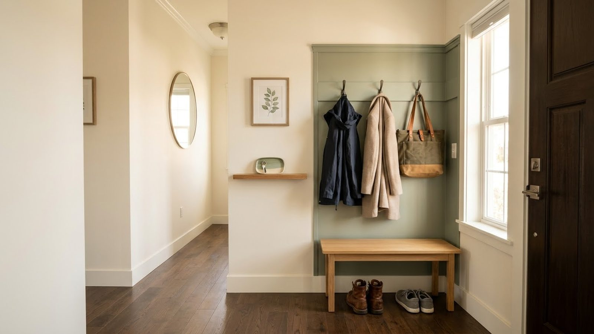
STORAGE
How to Fix an Entryway That Always Feels Cluttered
A practical reset using zones, hooks, baskets and a short daily routine.
Read the guide →THE GUIDE LIBRARY
Every guide has one primary category. Related topics can still link to each other, but each article has one clear home in the library.
STORAGE & ORGANIZATION

A practical reset using zones, hooks, baskets and a short daily routine.
Read the guide →
Keep chargers accessible while giving cables a predictable home.
Read the guide →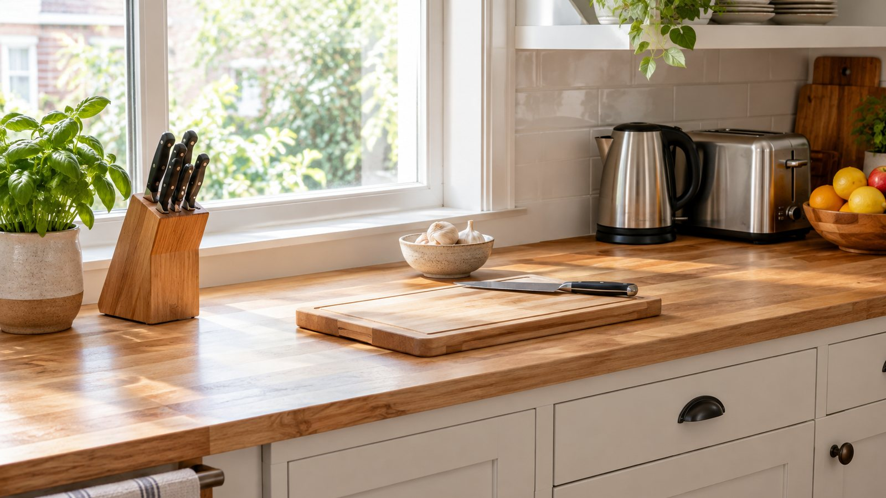
A simple counter system for daily kitchen items and faster resets.
Read the guide →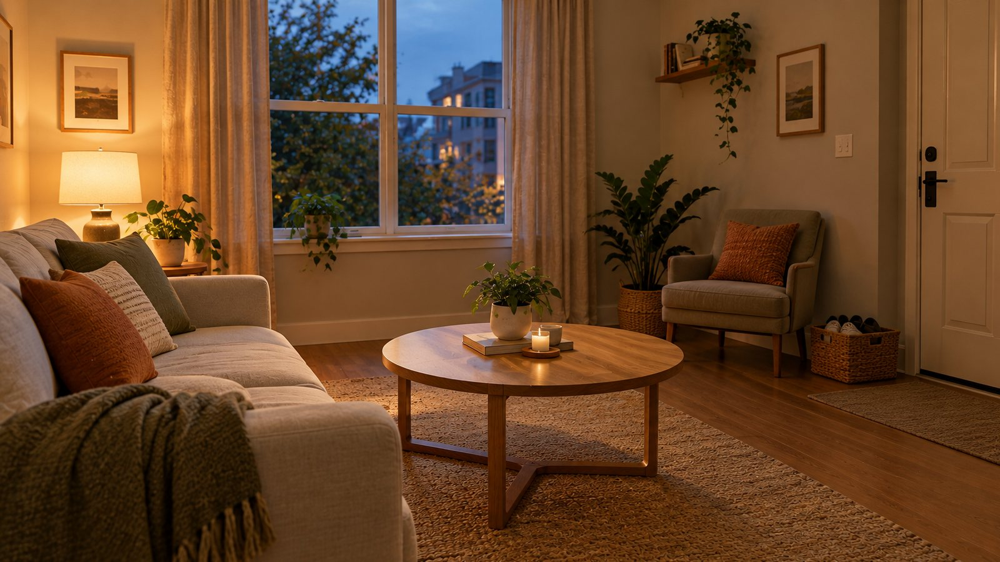
A practical reset for the rooms and surfaces that create the most friction at home.
Read the guide →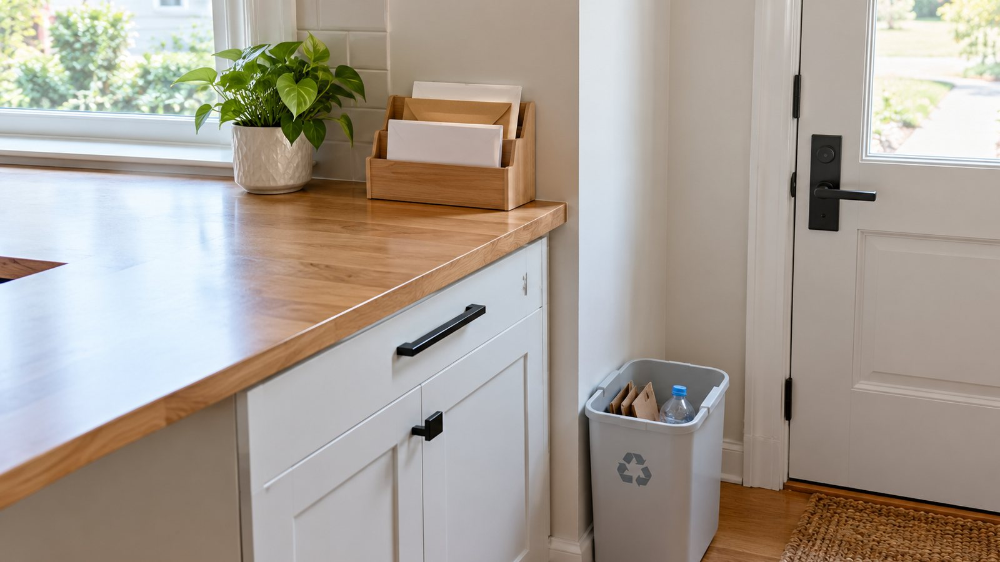
Sort at the door, use one three-slot tray and reset once a week.
Read the guide →HOME DESIGN
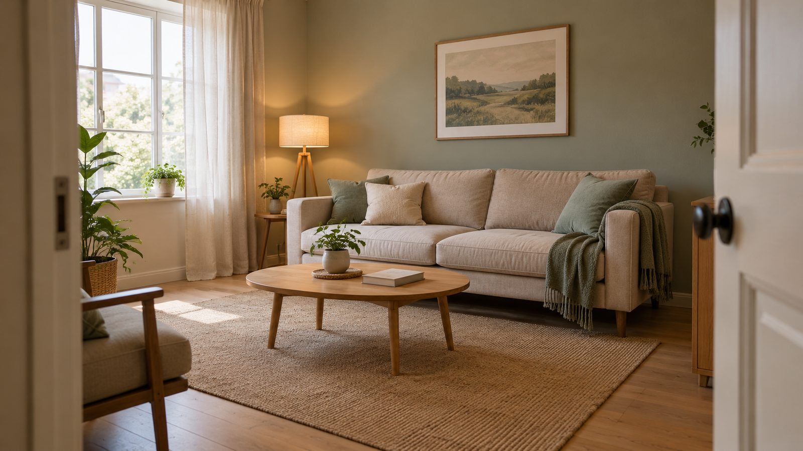
Use lighting, layout, decluttering and storage to reduce daily friction.
Read the guide →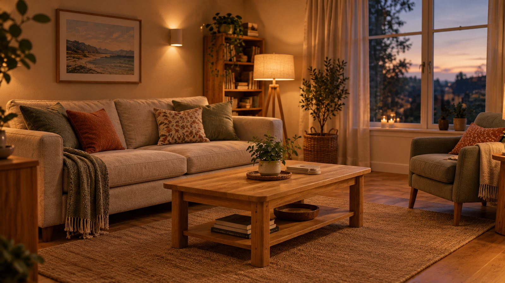
Match brightness and placement to what you actually do in each room.
Read the guide →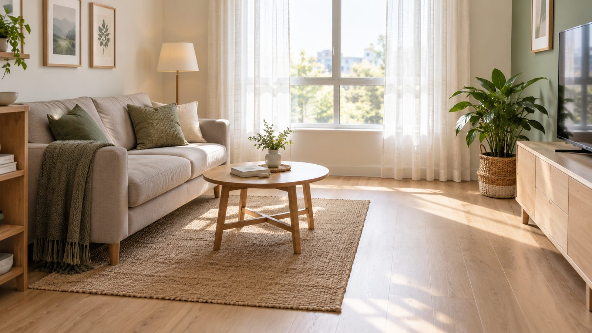
Use furniture placement, clear walking paths, lighting and visual scale to make the room feel more spacious before buying anything.
Read the guide →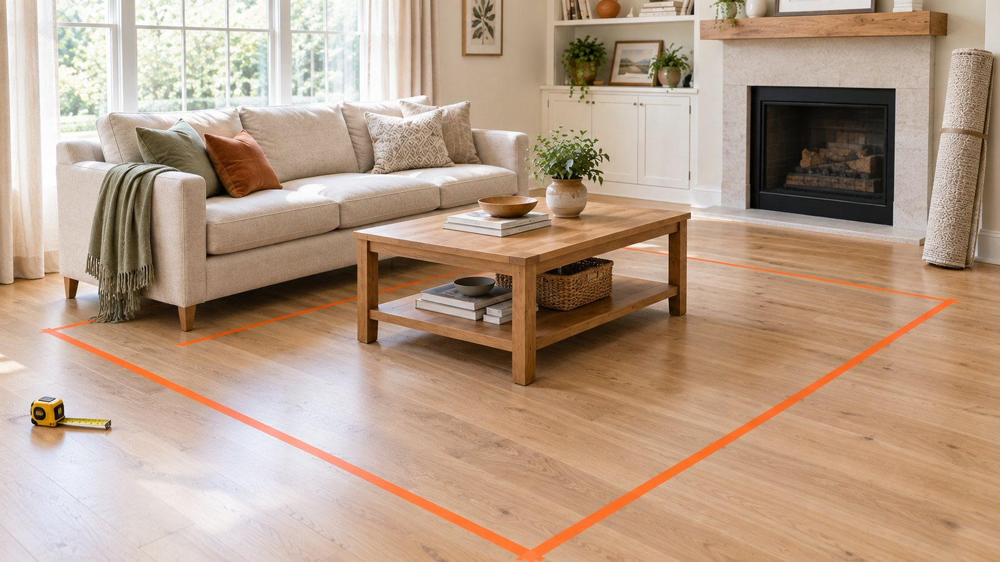
Tape the rug on the floor before you buy, then use simple rules for the living room, dining table and bed so it never looks too small.
Read the guide →WEEKEND PROJECTS
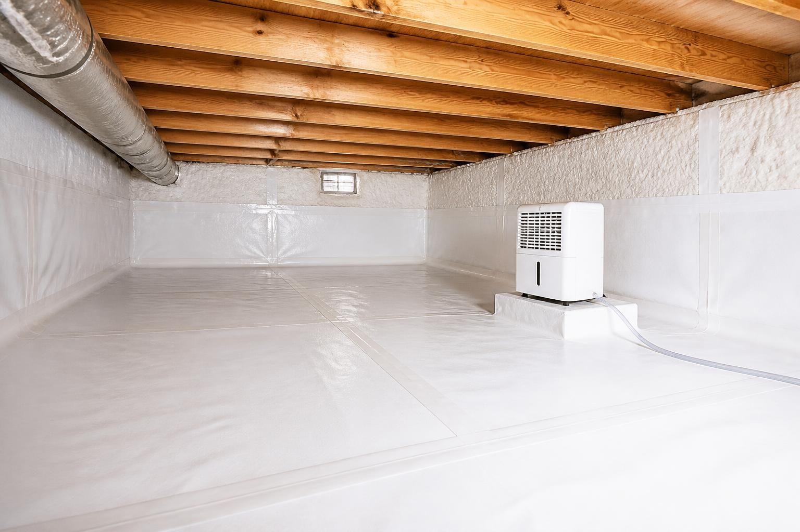
Find the cause of a damp crawl space before buying a dehumidifier. Check drainage and leaks, install a ground vapor barrier, and monitor humidity.
Read the guide →
Measure, size, place and test a crawl space dehumidifier in 7 days.
Read the guide →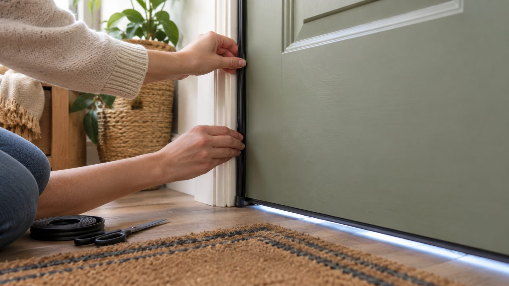
Find the leak and choose the right seal before replacing the door.
Read the guide →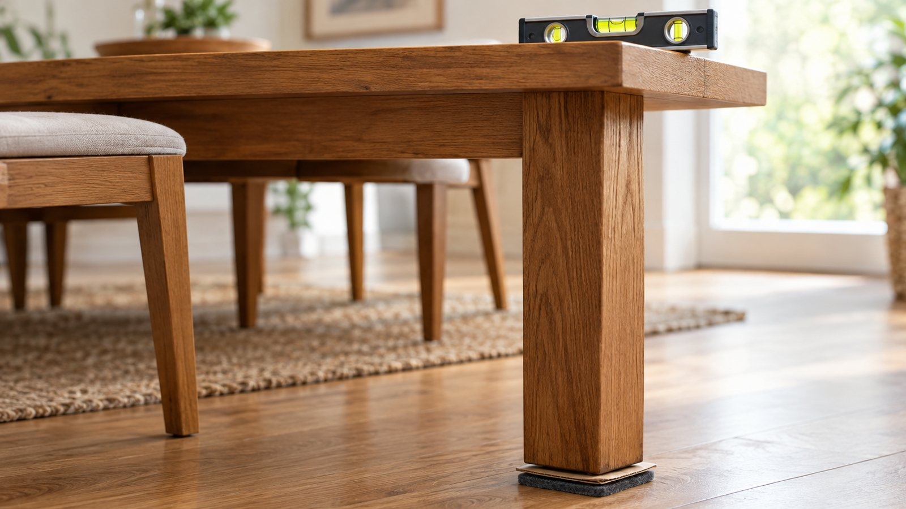
Check the floor, legs and joints so you fix the simplest cause first.
Read the guide →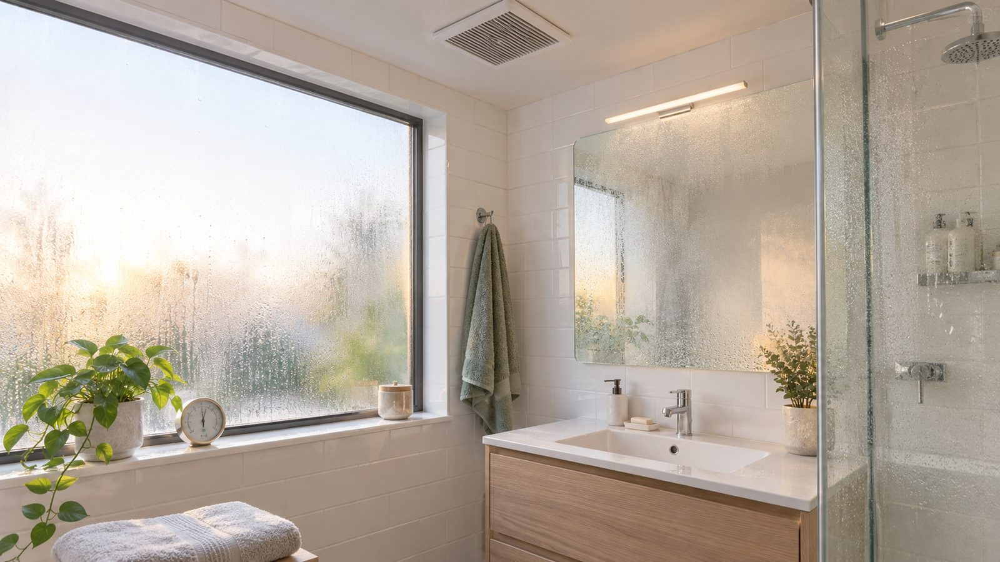
Improve airflow, reduce moisture exposure and investigate persistent dampness.
Read the guide →
Improve towel drying, ventilation and washing habits before replacing towels.
Read the guide →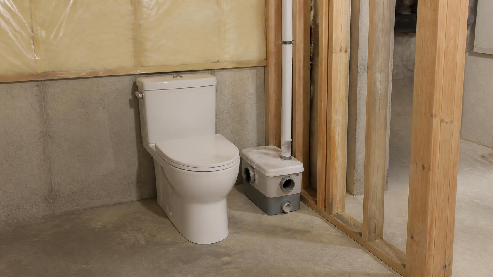
How it works, the limits manufacturers state, the downsides, venting and permits, and what to check before buying.
Read the guide →
Height, studs, anchors and layout: how to hang oversized art safely, even as a beginner.
Read the guide →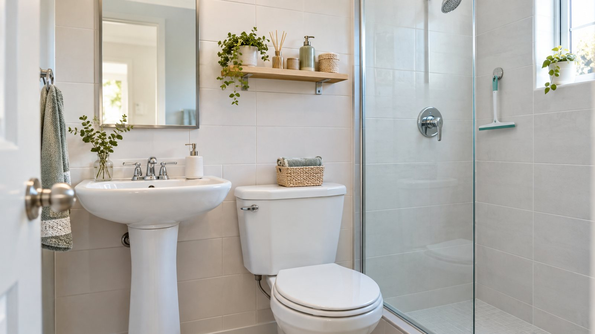
Reduce wet surfaces, countertop clutter and cleaning friction without changing the room.
Read the guide →SMART HOME

Start with one useful routine, keep manual controls and expand only when the benefit is clear.
Read the guide →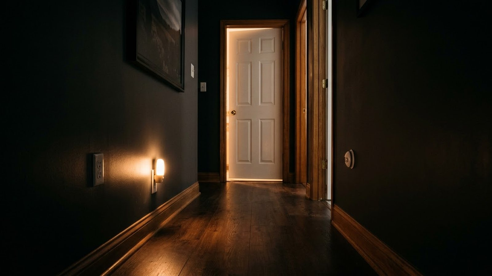
Use motion sensors for useful routines with sensible timing and placement.
Read the guide →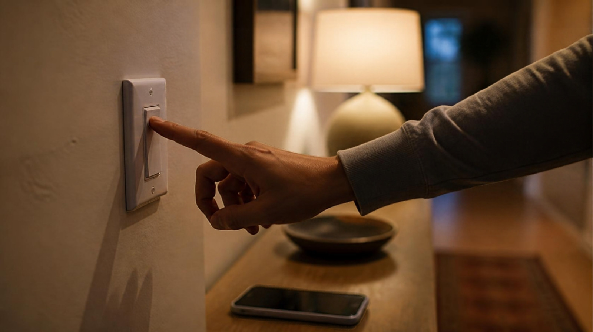
Find out which smart lights, plugs and routines still work when the internet drops, and fix the weak spots in 15 minutes, with no new gadgets.
Read the guide →
Check the watts before you plug in: a two-minute method and a green, amber and red list of what belongs on a smart plug.
Read the guide →